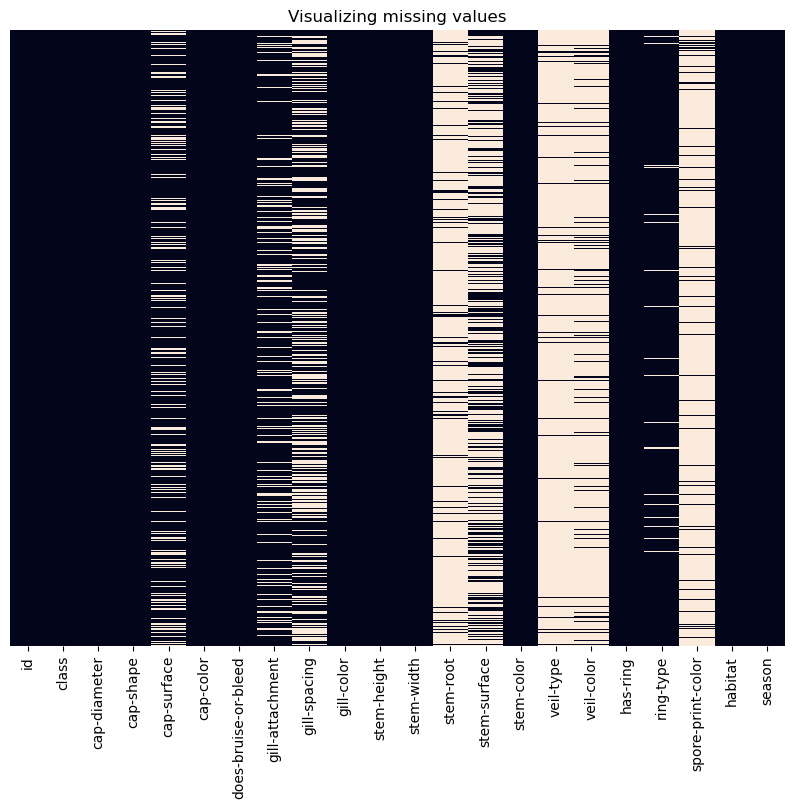
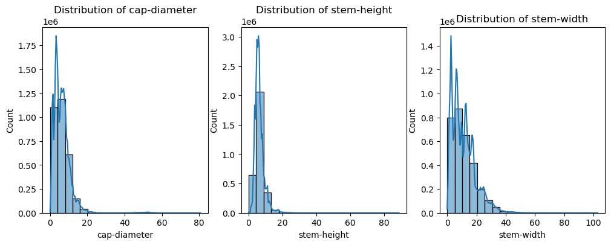
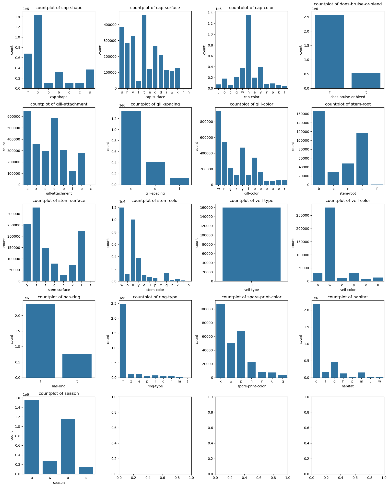
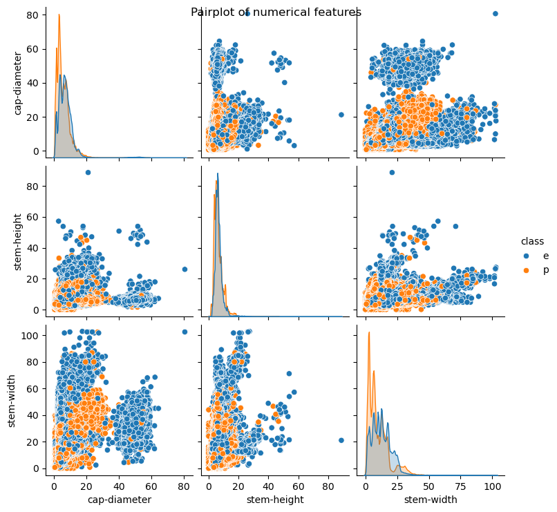
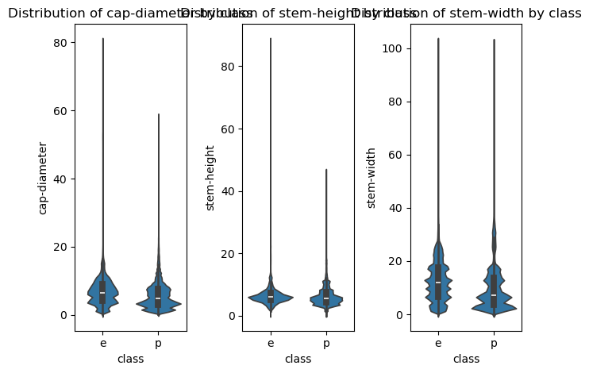

import matplotlib.pyplot as plt
import seaborn as sns
import pandas as pd
---------------------------------------------------------------------------
ModuleNotFoundError Traceback (most recent call last)
Cell In[1], line 1
----> 1 import matplotlib.pyplot as plt
2 import seaborn as sns
3 import pandas as pd
ModuleNotFoundError: No module named 'matplotlib'
train_df = pd.read_csv('data/train.csv')
test_df = pd.read_csv('data/test.csv')
1. 理解数据#
print('First 5 rows of our dataset:')
train_df.head()
First 5 rows of our dataset:
| id | class | cap-diameter | cap-shape | cap-surface | cap-color | does-bruise-or-bleed | gill-attachment | gill-spacing | gill-color | ... | stem-root | stem-surface | stem-color | veil-type | veil-color | has-ring | ring-type | spore-print-color | habitat | season | |
|---|---|---|---|---|---|---|---|---|---|---|---|---|---|---|---|---|---|---|---|---|---|
| 0 | 0 | e | 8.80 | f | s | u | f | a | c | w | ... | NaN | NaN | w | NaN | NaN | f | f | NaN | d | a |
| 1 | 1 | p | 4.51 | x | h | o | f | a | c | n | ... | NaN | y | o | NaN | NaN | t | z | NaN | d | w |
| 2 | 2 | e | 6.94 | f | s | b | f | x | c | w | ... | NaN | s | n | NaN | NaN | f | f | NaN | l | w |
| 3 | 3 | e | 3.88 | f | y | g | f | s | NaN | g | ... | NaN | NaN | w | NaN | NaN | f | f | NaN | d | u |
| 4 | 4 | e | 5.85 | x | l | w | f | d | NaN | w | ... | NaN | NaN | w | NaN | NaN | f | f | NaN | g | a |
5 rows × 22 columns
print(f'There are {train_df.shape[0]} rows and {train_df.shape[1]} columns')
There are 3116945 rows and 22 columns
print('Column names and data type of each column:')
train_df.dtypes
Column names and data type of each column:
id int64
class object
cap-diameter float64
cap-shape object
cap-surface object
cap-color object
does-bruise-or-bleed object
gill-attachment object
gill-spacing object
gill-color object
stem-height float64
stem-width float64
stem-root object
stem-surface object
stem-color object
veil-type object
veil-color object
has-ring object
ring-type object
spore-print-color object
habitat object
season object
dtype: object
print(f'There are {train_df.duplicated().sum()} duplicate rows in the train dataset.')
There are 0 duplicate rows in the train dataset.
print('Checking missing values in each volumn:')
train_df.isnull().sum()
Checking missing values in each volumn:
id 0
class 0
cap-diameter 4
cap-shape 40
cap-surface 671023
cap-color 12
does-bruise-or-bleed 8
gill-attachment 523936
gill-spacing 1258435
gill-color 57
stem-height 0
stem-width 0
stem-root 2757023
stem-surface 1980861
stem-color 38
veil-type 2957493
veil-color 2740947
has-ring 24
ring-type 128880
spore-print-color 2849682
habitat 45
season 0
dtype: int64
plt.figure(figsize=(10,8))
plt.title('Visualizing missing values')
sns.heatmap(
train_df.isnull(),
cbar = False,
yticklabels = False
)
<Axes: title={'center': 'Visualizing missing values'}>

2. 数据清洗#
test_df_cleaned = test_df.copy()
train_df_cleaned = train_df.copy()
train_df_cleaned = train_df_cleaned.drop('id', axis=1)
target_column = 'class'
categorical_columns = train_df_cleaned.select_dtypes(include=['object']).columns.drop(target_column)
numerical_columns = train_df_cleaned.select_dtypes(exclude=['object']).columns
print('Target column: ', target_column)
print('\nCategorical columns: ', categorical_columns.tolist())
print('\nNumerical columns: ', numerical_columns.tolist())
Target column: class
Categorical columns: ['cap-shape', 'cap-surface', 'cap-color', 'does-bruise-or-bleed', 'gill-attachment', 'gill-spacing', 'gill-color', 'stem-root', 'stem-surface', 'stem-color', 'veil-type', 'veil-color', 'has-ring', 'ring-type', 'spore-print-color', 'habitat', 'season']
Numerical columns: ['cap-diameter', 'stem-height', 'stem-width']
2.1 merge too infrequent cols in categorical columns#
for col in categorical_columns:
num_unique = train_df_cleaned[col].nunique()
print(f" '{col}' has {num_unique} unique categories. ")
'cap-shape' has 74 unique categories.
'cap-surface' has 83 unique categories.
'cap-color' has 78 unique categories.
'does-bruise-or-bleed' has 26 unique categories.
'gill-attachment' has 78 unique categories.
'gill-spacing' has 48 unique categories.
'gill-color' has 63 unique categories.
'stem-root' has 38 unique categories.
'stem-surface' has 60 unique categories.
'stem-color' has 59 unique categories.
'veil-type' has 22 unique categories.
'veil-color' has 24 unique categories.
'has-ring' has 23 unique categories.
'ring-type' has 40 unique categories.
'spore-print-color' has 32 unique categories.
'habitat' has 52 unique categories.
'season' has 4 unique categories.
for col in categorical_columns:
print(f"\nTop10 value counts in '{col}':\n{train_df_cleaned[col].value_counts().head(10)}")
Top10 value counts in 'cap-shape':
cap-shape
x 1436026
f 676238
s 365146
b 318646
o 108835
p 106967
c 104520
d 65
e 60
n 41
Name: count, dtype: int64
Top10 value counts in 'cap-surface':
cap-surface
t 460777
s 384970
y 327826
h 284460
g 263729
d 206832
k 128875
e 119712
i 113440
w 109840
Name: count, dtype: int64
Top10 value counts in 'cap-color':
cap-color
n 1359542
y 386627
w 379442
g 210825
e 197290
o 178847
p 91838
r 78236
u 73172
b 61313
Name: count, dtype: int64
Top10 value counts in 'does-bruise-or-bleed':
does-bruise-or-bleed
f 2569743
t 547085
w 14
c 11
h 9
b 7
y 7
a 7
x 7
s 6
Name: count, dtype: int64
Top10 value counts in 'gill-attachment':
gill-attachment
a 646034
d 589236
x 360878
e 301858
s 295439
p 279110
f 119953
c 74
u 56
w 37
Name: count, dtype: int64
Top10 value counts in 'gill-spacing':
gill-spacing
c 1331054
d 407932
f 119380
e 24
a 17
s 16
b 12
x 8
t 8
p 7
Name: count, dtype: int64
Top10 value counts in 'gill-color':
gill-color
w 931538
n 543386
y 469464
p 343626
g 212164
o 157119
k 127970
f 119694
r 62799
e 56047
Name: count, dtype: int64
Top10 value counts in 'stem-root':
stem-root
b 165801
s 116946
r 47803
c 28592
f 597
d 24
y 14
g 12
w 12
p 12
Name: count, dtype: int64
Top10 value counts in 'stem-surface':
stem-surface
s 327610
y 255500
i 224346
t 147974
g 78080
k 73383
h 28283
f 512
w 49
d 48
Name: count, dtype: int64
Top10 value counts in 'stem-color':
stem-color
w 1196637
n 1003464
y 373971
g 132019
o 111541
e 103373
u 67017
p 54690
k 33676
r 22329
Name: count, dtype: int64
Top10 value counts in 'veil-type':
veil-type
u 159373
w 11
a 9
e 8
f 8
c 5
b 5
y 4
k 4
g 4
Name: count, dtype: int64
Top10 value counts in 'veil-color':
veil-color
w 279070
y 30473
n 30039
u 14026
k 13080
e 9169
g 30
p 23
r 14
o 13
Name: count, dtype: int64
Top10 value counts in 'has-ring':
has-ring
f 2368820
t 747982
r 16
h 13
c 11
s 11
l 11
p 11
g 8
z 6
Name: count, dtype: int64
Top10 value counts in 'ring-type':
ring-type
f 2477170
e 120006
z 113780
l 73443
r 67909
p 67678
g 63687
m 3992
t 98
d 37
Name: count, dtype: int64
Top10 value counts in 'spore-print-color':
spore-print-color
k 107310
p 68237
w 50173
n 22646
r 7975
u 7256
g 3492
y 36
s 21
c 16
Name: count, dtype: int64
Top10 value counts in 'habitat':
habitat
d 2177573
g 454908
l 171892
m 150969
h 120137
w 18530
p 17180
u 5264
e 55
s 52
Name: count, dtype: int64
Top10 value counts in 'season':
season
a 1543321
u 1153588
w 278189
s 141847
Name: count, dtype: int64
😱 有一些值太少了， 我们处理的方法是： 合并到一个unknown
def replace_infrequent_categories(df, col, threshold = 70):
value_counts = df[col].value_counts()
infrequent = value_counts[value_counts < threshold].index
df[col] = df[col].apply(lambda x: 'Unknown' if x in infrequent else x)
return df
for col in categorical_columns:
train_df_cleaned = replace_infrequent_categories(train_df_cleaned, col)
test_df_cleaned = replace_infrequent_categories(test_df_cleaned, col)
print('After replacement:')
for col in categorical_columns:
num_unique = train_df_cleaned[col].nunique()
print(f"'{col}' has {num_unique} unique categories.")
After replacement:
'cap-shape' has 8 unique categories.
'cap-surface' has 14 unique categories.
'cap-color' has 13 unique categories.
'does-bruise-or-bleed' has 3 unique categories.
'gill-attachment' has 9 unique categories.
'gill-spacing' has 4 unique categories.
'gill-color' has 13 unique categories.
'stem-root' has 6 unique categories.
'stem-surface' has 9 unique categories.
'stem-color' has 14 unique categories.
'veil-type' has 2 unique categories.
'veil-color' has 7 unique categories.
'has-ring' has 3 unique categories.
'ring-type' has 10 unique categories.
'spore-print-color' has 8 unique categories.
'habitat' has 9 unique categories.
'season' has 4 unique categories.
2.2 filling missing values in Numerical columns#
如果偏态分布（非对称），用median
如果对称分布，用mean
print('The skeness of columns:')
print(train_df_cleaned[numerical_columns].skew())
The skeness of columns:
cap-diameter 3.972609
stem-height 1.926682
stem-width 1.235427
dtype: float64
medians = train_df_cleaned[numerical_columns].median()
train_df_cleaned[numerical_columns] = train_df_cleaned[numerical_columns].fillna(medians)
test_df_cleaned[numerical_columns] = test_df_cleaned[numerical_columns].fillna(medians)
print('所有的数值列都是偏态分布，用median填充')
所有的数值列都是偏态分布，用median填充
2.3 unkown 填充missing values in Categorical columns#
train_df_cleaned[categorical_columns] = train_df_cleaned[categorical_columns].fillna('Unknown')
test_df_cleaned[categorical_columns] = test_df_cleaned[categorical_columns].fillna('Unknown')
2.4 重新检测，丢掉重复row#
print("There are {} duplicates in train dataset.".format(train_df_cleaned.duplicated().sum()))
print("There are {} duplicates in test dataset.".format(test_df_cleaned.duplicated().sum()))
train_df_cleaned = train_df_cleaned.drop_duplicates()
print('Drop them')
There are 2 duplicates in train dataset.
There are 0 duplicates in test dataset.
Drop them
3. explore data#
3.1 Numerical feature 分布#
fig, axes = plt.subplots(nrows=1, ncols=len(numerical_columns), figsize = (12, 4))
for col, ax in zip(numerical_columns, axes):
sns.histplot(
data=train_df_cleaned,
x=col,
kde=True,
bins=20,
ax=ax
)
ax.set_title(f'Distribution of {col}')
fig.tight_layout()

😅
数值特征都是右尾分布，不是正态分布！！这回影响到模型的选择。
有些过高的值可能是异常的， 需要处理
3.2 Categorical feature 分布#
fig, axes = plt.subplots(nrows=5, ncols=4, figsize = (16, 20))
ax_index = 0
for col in categorical_columns:
# exclude unknown
filter_data = train_df_cleaned.loc[train_df_cleaned[col] != 'Unknown']
ax= axes.ravel()[ax_index]
sns.countplot(
data=filter_data,
x = col,
ax = ax
)
ax.set_title(f'countplot of {col}')
ax_index+=1
fig.tight_layout()

3.3 correlations of numerical feature#
pairplot = sns.pairplot(
data=train_df_cleaned,
hue='class'
)
pairplot.figure.suptitle('Pairplot of numerical features')
Text(0.5, 0.98, 'Pairplot of numerical features')

可以看到有一些趋势， 如：
在左下角的图中，有毒的蘑菇似乎有更小的cap-diameter和更小的stem-width
fig, axes = plt.subplots(nrows=1, ncols=len(numerical_columns))
for col, ax in zip(numerical_columns, axes):
sns.violinplot(
data=train_df_cleaned,
x='class',
y=col,
ax=ax
)
ax.set_title(f'Distribution of {col} by class')
fig.tight_layout()

小提琴图 进一步展示了同一个特征值对于不同类标签的发散程度